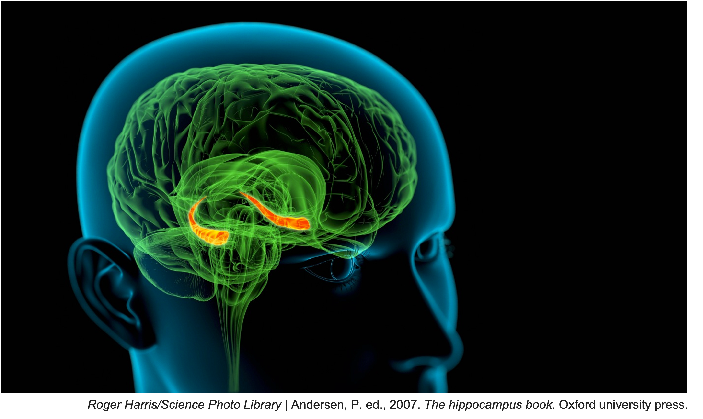

Biography
"It isn't so astonishing, the number of things I can remember, as the number of things I can remember that aren't so." - Mark Twain
I studied David G. Myers's Exploring Psychology textbook, for an undergraduate psychology course, which introduced me to the intricate workings of our brain. One chapter that particularly stayed with me was on memory. Realizing how our daily experiences are filtered and retained in the brain, and how delicate memory construction actually is, I became eager to learn more about the science of memory.
As someone with a highly imaginative mind ("highly" because I have always expressed my feelings through creative outlets, such as paintings, poetry, and prose), I was fascinated by the discovery of how imagination affects memory. When writing fictional stories growing up, I often wondered how my characters came about -- some seemed peculiarly familiar, while others surprised me with their unexpected, non-being intellectual depth. I immediately began exploring ways to mix this newfound fascination with my academic interests, which eventually led me to mathematical investigation of memory and role of the brain region called the hippocampus (indicated in orange hues in the image below). As per David G. Myers, the hippocampus functions like a "save" button for actively acknowledged memories, and what we remember shapes who we are.
During graduate school, I also began exploring the role of memory in learning and became an advocate for active learning environments (as compared to traditional lecture-based classrooms). I closely follow the work of Carol Dweck, who introduced two categories of mindsets: fixed and growth. I grew up with a strong inclination toward a fixed mindset, especially in academics (grades received, approach to studying, etc.). From experience, I know how challenging it can be to train your mind to think differently and essentially "relearn" how to approach life. Viewing learning through the lens of a fixed mindset often led me towards quick discouragement with lower grades. However, after adopting a growth mindset, I became more curious and focused on improving my understanding of challenging concepts. I firmly believe that possessing a growth mindset and nurturing a positive attitude toward learning are crucial for academic success.
I am an aspiring professor and aim to teach mathematics while fostering growth mindsets in my students. In addition, I aim to contribute to the field of computational neuroscience by conducting deeper research on the role of the hippocampus in memory construction.
